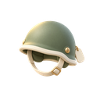
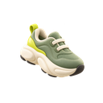

논문 밖의 이야기
논문과 프로젝트 외에, 저에 관한 몇 가지입니다.
- AI와 함께하는 일상
- 눈뜰 때부터 잠들기 직전까지 AI와 대화합니다. 계획 세우기, 얽힌 생각 정리, 영어 대화 연습 등 일상의 세부 작업은 AI에 맡기고 저는 큰 방향을 정합니다.
- 투자
- AI 산업의 장기적인 성장을 믿습니다. 매 거래일 USD와 QLD를 매수하며 그 믿음을 실천합니다.
- 질문하기
- AI agent에게 더 나은 질문을 하도록 가르칩니다. 생각해 보니 저도 그 훈련이 좀 필요하겠네요.

군 복무- KATUSA (Korean Augmentation to the United States Army)로 복무하며 통역을 맡고 수송 작전을 이끌었습니다. 미국 문화와 U.S. Army의 리더십을 직접 경험한 시간이었습니다.

달리기- 달리면 잡념이 사라지고, 지금 이 순간에 온전히 몰입할 수 있어 좋습니다.